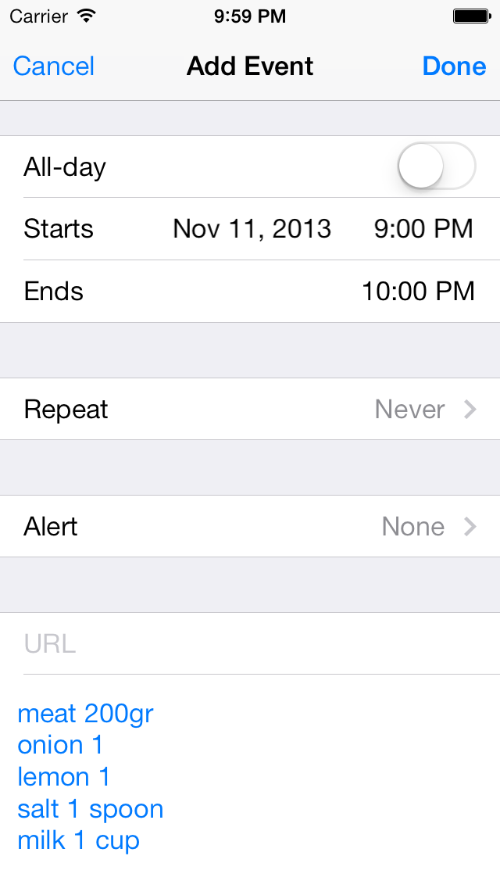

Welcome to Book For Cook official page.
Thank you for interesting in app "Book for Cook". This app is helpful for people who like to cook and have a lot of recipes. With this app you can easily store your recipes grouped by categories. Each recipe has a list of ingridients and description (steps to cook). App also allows to set reminder with a list of groceries needed for recipe. It is also possible to share recipes via email.
Support/Contacts
In case of any issues please contact me in Twitter: Tweet to @offtie
Your recipe book in your pocket. Always with you.
With two touches you can view saved recipes and set reminder for grocery store. You can import recipes from list of popular sites. All details are automatically scrapped from web page and imported into your iPhone.
| View list of recipes for each category.
|
Add ingredients, duration and description to recipe.
|
Set reminder to shop for groceries.
 |
| Or share your recipes via email.
|
Import from list of popular recipe sites.
|
|